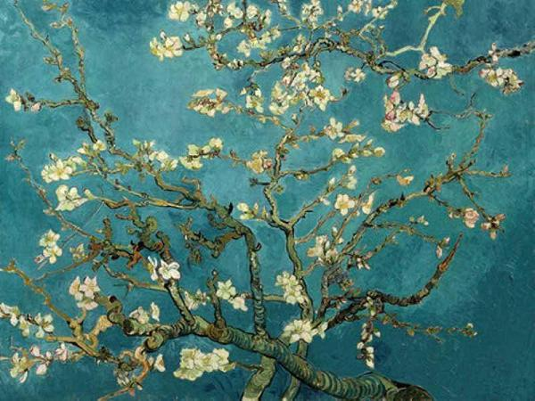
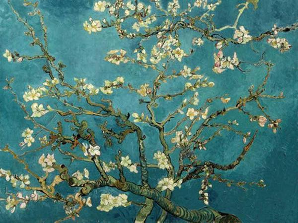
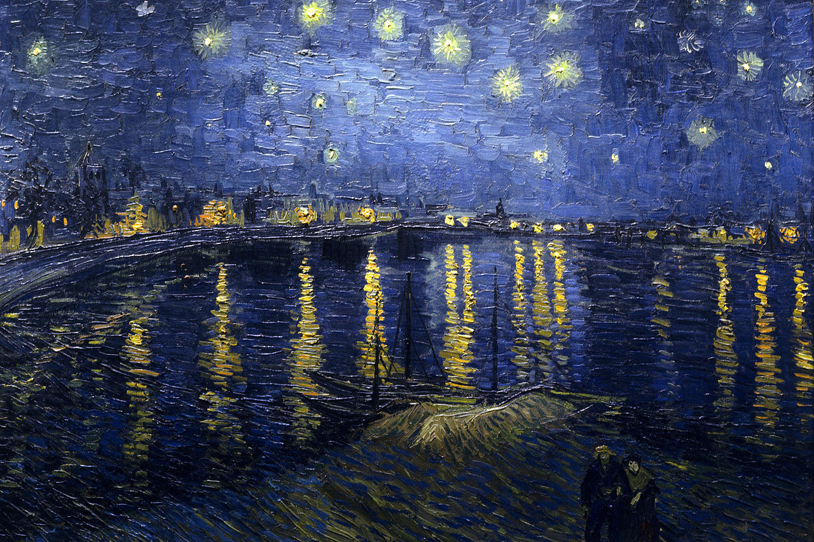
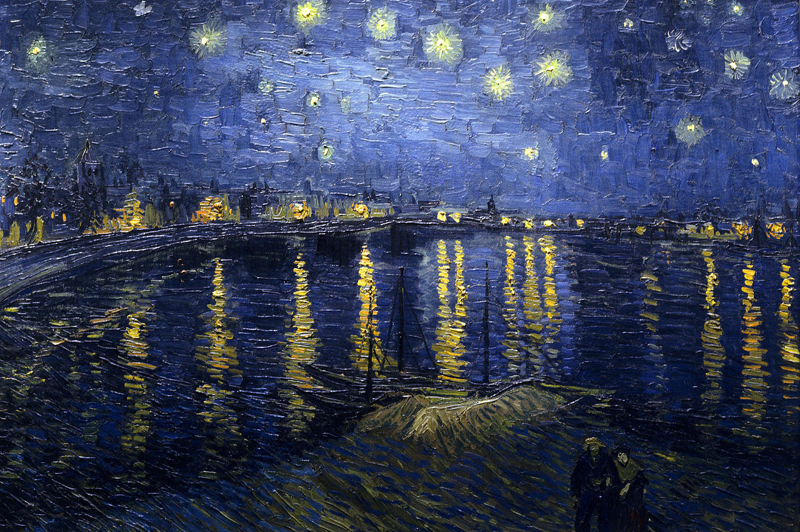

Van Gogh was born in 1853 and grew up in Holland. He was raised in a religious family with his father being a minister. When his school ended, Vincent followed his uncle's profession and became an art dealer learning the trade in Holland and then working in England and France. Vincent was successful and initially happy with his work. However, he soon grew tired of the business of art, especially in Paris, and lost interest in the trade. After returning home, Vincent began to study theology. While very passionate and enthusiastic, he failed exams to enter a couple programs. Characteristic of his personality, he was intelligent, able to speak multiple languages, but he did not think that Latin was a language for preaching to the poor. During this period, he worked as a missionary in a coal mining community living with hard working poor common people. As his development as a preacher was stalling, his interest in those around him was increasing. His life as an artist was beginning.
In 1880, at 27 years old, Van Gogh entered the Academie Royale des Beaux-Arts in Brussels, Belgium. The following winter, living in Amsterdam, Vincent fell in love, had his heart broken, and began painting. The next few years would result in little success both in love and art.
Van Gogh's Potato Eaters, his first major work, was painted in 1885. By this time, he was still having difficulty finding love, but was beginning to receive interest in his paintings. He was now fully devoting himself to painting: living frugally, studying color theory, and admiring the works of artists like Peter Paul Rubens. Unfortunately, as would be his entire life, his paintings were still difficult to sell. His brother Theo, an art dealer and the recipient of many letters from Vincent, commented that there should be more color in his work. Van Gogh was painting peasants and rural landscapes using dark earth tones. Around this same time, Impressionism, with its bright vivid colors, was becoming popular.
The next year, Vincent moved to Paris where his art began to take on the style that would make him famous. In Paris, he was discussing art with some of the most avant-garde and influential artists of his time - painters like Gauguin, Bernard, and Toulouse-Lautrec. He was using more color, applying the paint with thick, bold brushstrokes, and painted all that surrounded him. Van Gogh arranged to show his work, to positive reviews, but was still unable to sell any pieces.
One of Van Gogh's dreams as an artist was to start a colony for artists in Arles in the south of France. Vincent moved to Arles where he was joined by Gauguin. While there, Van Gogh entered the most productive and creative period of his life painting his famous Sunflowers. However, it also was a time of great turmoil for Vincent beginning a period of hospital stays for mental illness and physical decline.
After just ten years of painting and producing some 900 paintings, Vincent Van Gogh took his own life in 1890. Never fully appreciated in his own time, it wouldn't take long for the art world to recognize the genius they lost. Within twenty years of his death, there were memorial shows of his works all over the world - influencing generations of artists to come.
 
  
